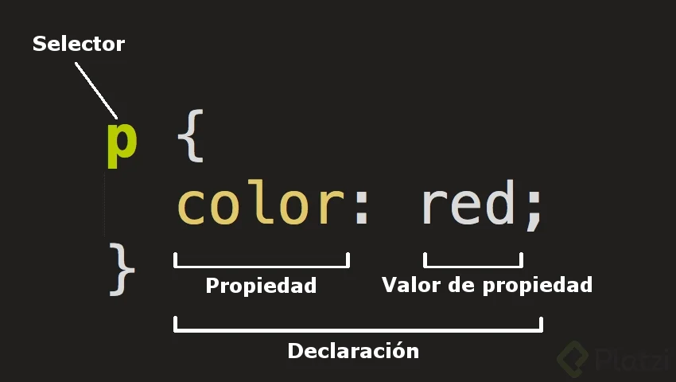
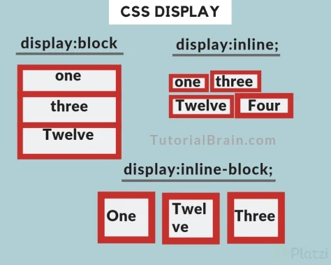

Desarrollo Web 💻 📃
Este curso es elemental para el Desarrollo web, ya sea frontend o backend, en el vamos a ver que es el desarrolo web y que nesecitamos saber para iniciar en este mundo.
Introducción
¿ Que es el desarrollo Web ?
Es todo lo que percibimos dentro del navegador (Ejem: facebook, twitter, Instagram etc.)
Navegadores (Chrome, Safari, Edge, Internet Explorer etc.)
¿ Como funciona Internet ?
Es la conexion entre Clientes, Internet y Servidor
Clientes(Clients): Son los dispositivos que se comunican con un servidor (Ejem. Celular, laptop etc.)
Internet Red o nube mediante la cual se comunican el cliente y un servidor
Servidor(Server): Es un computador conectado en la red que esta encendido siempre y es donde guardamos nuestros proyectos web para que los clientes se conecten a traves de una red o dominio (ejem: dominio.com etc). Los servidores tambien son llamados hosting
Profesiones del Desarrollo Web
Existen 2 tipos :
Frontend
Encargado de cuidar toda la aparicencia y experiencia del usuario
Se encarga de transformar los diseños en codigo, tambien enlaza con los eventos del usuario (interacciones click etc), ademas la conexion con el backend desde el lado del cliente
Existen subramas como arquitectos frontend, desarrollador javascript entre otros
El frontend debe manejar 3 tecnologias HTML,CSS y Javascript
Backend
Resguardan los datos y seguridad de las aplicaciones
Se encarga del procesamineto y almacenamiento de los datos en la base de datos y de la seguridad, se encarga de todo los procesos que no son visibles
Existen subramas como Zizagmin, Devops, desarrollador javascript entre otros
Ruta de Aprendizaje Frontend
- Git y gitHub
- Desarrollo Web
- Responsive Design
- CCS Grid Layout
- Animaciones para la Web
- Post CSS Organiza codigo y sintaxis
- JQUERY a JS -> javascript sin librerias
- Fundamentos JavaScript
- Webpack Encapsular codigo JS
- React JS
- Redux
- React Router
Ajustes Basicos de VS Code ▶
HTML
DOM
DOM es el acrónimo de Document Object Model o Modelo de documento, y es la manera en que se representa el contenido del documento, de manera similar a un árbol de nodos.
A continuación, un ejemplo sencillo de la estructura del DOM:
- Html
- Head
- title
- meta
- Body
- Header
- nav
- Section
- article
- Footer
- Header
Etiquetas HTML
listado de etiquetas 1 listado de etiquetas 2Las etiquetas son la representación básica de la información en un documento html. Sirven para crear y organizar el contenido.
La sintaxis general de una etiqueta es:
Hay ciertas etiquetas que tienen una sintaxis diferente, ya que se cierran en sí mismas; es decir, no tienen etiqueta de cierre se cierran con / en la etiqueta de apertura
Algunas de las etiquetas más conocidas y usadas son:
Etiquetas de cabecera (head):
- doctype: indica al navegador el tipo de documento que se está mostrando.
- html: es la etiqueta que envuelve todo el documento
- head: es la cabecera del documento y contiene sub etiquetas que describen al documento o incluyen recursos adicionales.
Etiquetas del cuerpo del documento (body):
- article: diferencia partes del contenido que pueden vivir por sí mismas.
- nav: para hacer menús de navegación
- aside: contenido menos relevante, como publicidad, etc.
- section: sirve para diferenciar las secciones principales del contenido.
- header: cabecera del documento
- footer: pie de pagina del documento
- h1 - h6: titulos de nuestro sitio web
- tables:tablas de contenidos, similar a la estructura de las hojas de calculo.
- ul y ol: lista de items
- div: cualquier división para organizar el contenido.
Estructura de nuestro sitio web
El proyecto que desarrollaremos en este curso se trata de un Portafolio Personal, incluirá una cabecera, navegación, un hero (área visual con información destacada), un área de proyectos y otra para eventos, y finalmente un pié de página con un formulario de contacto y enlaces a redes sociales.
El archivo index.html es el archivo que el navegador abre por defecto al acceder a un directorio en un servidor web.
Atributos HTML
Son los encargados de dar funciones adicionales a las etiquetas y se declaran en la etiqueta de apertura,
Por ejemplo en el atributo href de la etiqueta a debemos indicar el link al que queremos visitar
href="url.com" //ejemplo
Formularios HTML
Se usan para capturar o manejar informacion y enviarla al encargado del sitio o enviarlos al servidor y su etiqueta es form y dentro de ella se utilizan las estiquetas que capturan datos como input,label,button etc.
Enlaces o navegacion entre secciones HTML
Lo que caracteriza a la web como medio de comunicación es la navegación por medio de hipervínculos (links o enlaces). Esta conexión entre archivos permite al usuario elegir el sentido de la navegación.
En el HTML los enlaces se marcan con la etiqueta a y el atributo principal es href="" donde se escribe la ubicación del archivo de destino que puede estar en la misma carpeta que el archivo que lo está llamando, en otra carpeta del mismo sitio o en otro sitio web.
Formas de agregar estilos en HTML
Existen 3 formas de agregar estilos a nuestro sitio :
Estilo en línea (Inline): Utiliza el atributo style. No es para nada recomendado ya que Html sirve para definir la estructura y semántica del código y no el aspecto visual, aquí estaríamos mezclando todo.
Estilo interno (Internal): Utiliza una etiqueta style Separa en cierto modo, de una forma menos sucia (por decirlo así). Esta forma sigue sin ser la más recomendada porque seguimos mezclando lo que es el aspecto visual con la estructura y semántica del código.
Estilo externo (External): Utilizando un archivo CSS externo al documento HTML. Esta es la forma más recomendada porque estamos separando totalmente la estructura y semántica con el aspecto visual.
CSS
Listado atributos cssReglas, Selectores,declaraciones propiedades y valores de CSS
Reglas
Es la declaracion completa que incluye selector, declaracion, propiedad y valor, a continuacion dejo un ejemplo
background:red;
}
selector{
propiedad:valor;
}
Selectores
Son la forma de identificar uno o mas elementos en nuestro HTML, funcionan con etiquetas, clases y ID y existen 3 tipos:
- Etiqueta: Hace refencia directamente al nombre de la etiqueta html ejemplo (nav, header,section, div etc.)
- Descendente: Es un elemento hijo de otro elemento de acuerdo a la estructura HMTL ejemplo (tagppal tagpadre taghijo etc)
-
Id y/o clase: Nos evita escribir un selector descendente tan encadenado grande y complejo, las clases y ID son atributos dentro de HTML,
su diferencia principal es que las clases se pueden usar las veces que se necesario y todos reciben el mismo estilo y el ID una unica vez, porque solo asigna estilo a un ID y los demas los ignora
#nombreID{
background:red;
}
.nombreClase{
propiedad:valor;
}
Declaracion
Son todos los valores que estan dentro de las llaves de los selectores y se componen de propiedades y valores, cada declaracion se separa con ;
Estilos incluidos en el navegador
Son los estilos que el navegador por defecto le asigna a la estructura HTML pueden cambiar segun el navegador o SO, por lo general al inspeccionar se identifican con la linea user agent stylesheets todos estos valores se modifican con CSS
Unidades de medida y colores 📝📃
Dentro de CSS podemos representar un color de 3 formas:
Colores
- Palabra Clave: Por lo general son el nombre del color en ingles ejem: (blue, red, transparent, gray etc.)
-
Hexadecimales rgb(),rgba(): Se utilizan para representar colores exactos, y estan
compuestos por un numeral y 6 caracteres o pueden ser 3 en caso de que se repita el valor en el par(#FF0099),
cada par de caracteres equivale a una letra o color de acuerdo al termino RGB (red,green,blue). Los valores de cada caracter que conforman el hexadecimal deben estar conformados por 1 de los 16 diferentes valores
(0,1,2,3,4,5,6,7,8,9,A,B,C,D,E,F), donde el menor valor es 0 y el maximo es F, es decir, cuando el valor es cero hay ausencia de color por ende es color negro y cuando el valor es F tiene todo el color
y equivale a blanco, de acuerdo a las variacion de los caracteres se componen todos los diferentes colores a continuacion algunos ejemplos:
RGB (Red,Green,Blue)(Rojo,Verde,Azul)
#FF0000 o #F00 => Rojo (Red)
#00FF00 o #0F0 => Verde (Green)
#0000FF o #00F => Azul (Blue)
#000000 o #000 => Negro
#FFFFFF o #FFF => Blanco
#F0F0F0 o #F0F0 => Gris - HSL (Hue,Saturacion,Luminosity)(Tono de color, Saturacion, Luminosidad): permite usar colores de manera similar a los hexadecimales,
pero se estructuran de forma diferente:
hsl(120,75%,50%)
El primer valor del ángulo sigue las reglas de la trigonometría para medir los ángulos, tiene limites de 0 grados a 360 grados, y no se admiten numeros negativos. Ej: 120 grados, 45 grados, 0 grados, 360grados etc.
El segundo valor es para la saturación (saturación) del color. Su valor se expresa en porcentaje. Un valor igual al 100% representa saturación total del color y 0 es un ligero sombreado gris de saturación
El tercer valor es para el brillo (ligereza). Su valor se expresa en porcentaje. Un valor igual al 100% resulta en color blanco y 0 en color negro, siendo el 50% el valor normal.
HSLA = equivalen a (tonalidad, saturación, ligereza, alfa-opacity) es una manera extendida de la declaración HSL en la que un cuarto argumento define la opacidad del color. Este cuarto argumento es un número decimal entre 0 y 1. se rige a las mismas reglas que el HLS, pero incluyendo la opacidad campo A (opacidad alfa) este valor admite decimales de 0 a 1 siendo 0 transparentes y 1 opaco. Los valores decimales se escriben con un punto de punto. Ejemplo: 0.5
Pixeles
Son la Unidades de medida dentro del mundo digital, y un pixel es la menor unidad
homogenea de color que forma parte de un imagen digital, los pixel lo podemos ver si hacemos zoom al maximo a la imagen,
cada pixel es el pequeño cuadro que se puede observar.
Esta unidad de medida en css se utiliza para asignar tamaños a imagenes, texto, bordes, dimensiones, margenes,
rellenos, etc. aunque tambien existen otras unidades de medida como los REM,EM etc.
Fuentes y Tipografias CSS
En css podemos cambiar la fuente con el atributo font-family:nombreFuente esta propiedad tambien permite agregar varios tipos de fuente separandolos con coma, para situaciones en las que el usuario no disponga de la fuente principal solicitada, automaticamente css continua con la siguiente fuente.
Para que funcione cualquier fuente tipografica en css es importante que el usuario la tenga instalada en el equipo o enlazada de un sitio web de fuentes ejem (google fonts)
Agregando fuente de Google fonts a css
- Ingresar a Google Fonts
- Buscar la fuente que necesitamos
- Seleccionar los estilos que queremos en la fuente
- En el botón superior derecho en donde podemos ver las fuentes seleccionadas y copiamos el Embed Standart. Si necesitamos otra fuente primero la agregamos
- Pegamos el embed standart por dentro de la etiqueta head. Se recomienda pegarla antes de nuestra hoja de estilos.
Propiedades de los textos
Estas propiedades nos permiten modifcar tamaños, tipos, subrayados de las fuentes tipograficas a continuacion el listado de algunas propiedades:
font-size // modificar el tamaño de la fuente
font-weight // modificar el peso de la fuente
font-style // modificar el estilo de la fuente
letter-spacing // modificar el espacio entre letras
text-transform // transformar la fuente (mayusculas, minuculas, etc)
text-decoration // moodificar la decoración de la fuente
Dimensiones fijas para elementos
Con estas propiedades definimos los tamaños fijos de los elementos, las propiedades width y height son la propiedades con las que se modifican y pueden recibir como valor cualquier unidad de medida
Si asignamos un alto inferior al del tamaño del contenido, el elemento inferior se sobrepondra
Background de color e imagen
Los fondos en css se asignan con la propiedad background-color o background-image:url('ruta de la imagen') estas propiedades segun lo que quieras asignar
El color de los textos se asigna con la propiedad color a continuacion las propiedades:
color para agregar un color al texto
text-decoration para modificar la decoración del texto
background-image para agregar una imagen de fondo
background-size para modificar el tamaño del background asignado
background-repeat para modificar la repetición en x o y del backgound
background-position para modificar la posición en x o y del bakground
Bordes en CSS
En CSS los bordes de definen con el atributo border y se le asignan 3 valores tamaño color estilo, tambien existe la forma de asignar bordes de forma detallada y bordes por zonas, tambien podemos redondear las esquinas de los bordes, con la propiedad border-radius y tambien funciona por zonas de la misma forma que el border .
border-width: 2px;// forma detallada
border-style:solid ;
border-color:black;
border-top:1px black solid //Bordes por zona solo a un lado
border-radius:10px;
border-top-right:10px;
Margen CSS
En css el margin es el espacio que separa los contenedores (espacio hacia afuera) y se define con el atributo margin, existe un concepto denominado margin collapsing en el que el margin del contenedor con mayor valor remplaza y anula al margin del contenedor de menor valor en la propiedad
Esta propiedad tambien permite centrar facilmente los elementos que tienen anchos fijos
y que tengan el atributo display:block. Se centra horizontalmente utilizando el atributo de
la siguiente forma
margin : 0 auto;
Rellenos (padding) CSS
En css el padding es el espacio que separa el contenido interno, del elemento contenedor (espacio del borde del contenedor hacia adentro) y se define con el atributo padding, la diferencia con el margin radica en que el margin aplica del borde del elemento o contenedor hacía afuera y el padding es del borde del elemento hacía adentro.
Modelo de caja
Tipos de Displays
Display es la propiedad más importante para controlar estructuras. Cada elemento tiene un valor de display por defecto dependiendo de qué tipo de elemento sea. El valor por defecto para la mayoría de los elementos es usualmente block (de bloque) o inline (en línea). Un elemento que es block es comunmente llamado elemento block-level. Un elemento inline siempre es llamado elemento inline.
Video refuerzo ▶
Display Block: Hace que un elemento ocupe todo el ancho posible sin
importar la cantidad de contenido
Display inline: Hace que el elemento ocupe unicamente el ancho del contenido,
permitiendo que al lado se posicione otro elemento que tenga la misma propiedad, por lo general las
tag de texto se comportan de esta manera. La desventaja esta propiedad es que anula
el atributo width definido al contenedor y todo el modelo de caja, unicamente ocupa el espacio del contenido
Display inline-block: Realiza lo mismo que display inline, con la ventaja que este atributo si respeta
el ancho asignado al contendedor, permitiendo manejar el width y facilita apilar varios elementos
Display flex: asume algunas propiedades por defecto que favorecen la alineación de los elementos internos.
Display grid: similar a flex, asume algunas propiedades por defecto organizando los contenidos en filas y columnas.
Display none: oculta el elemento.
Flexbox (diplay:flex) 📝
Game flexbox Game 2
Simulador de flexboxFlexbox es un sistema de elementos flexibles que llega con la idea de olvidar estos mecanismos y acostumbrarnos a una mecánica más potente, limpia y personalizable, en la que los elementos HTML se adaptan y colocan automáticamente y es más fácil personalizar los diseños. Está especialmente diseñado para crear, mediante CSS, estructuras de una sóla dimensión.
Propiedades
Flex Se le aplica al contenedor padre, y esto afectará a los hijos directos y por defecto se apilan la derecha
Si existen varios elementos hijos la propiedad calcula el ancho automatico para que todos quepan en el ancho de la pantalla, perderán
la dimensión configurada modelo de caja o width
flex-shrink: Propiedad utilizada en los hijos que posean en el padre la propiedad display flex,
identifica la capacidad de encogimiento respecto al ancho definido. esta propiedad funciona con valores 0 a 1, donde 1 equivale al 100% y cero es cero
flex direction: Esta propiedad se le asigna al padre y es donde se indica como
se alinean los hijos en 1 sola fila (row) (viene por defecto) o una sola columna(column)
flex-wrap: Propiedad del elemento padre, puede ser nowrap (por defecto) o wrap
se utiliza para que los elementos que no caben en el ancho de la pantalla automaticamente pasen a la siguiente linea
y asi evitar el scroll horizontal
La propiedad flex se le aplica al contenedor padre y afecta a sus hijos directos y los alinea, si en el ancho total no caben todos los hijos, se altera el width y/o modelo de caja,reduciendo el width para hacer que todos quepan en la misma linea, si no queremos que se altere este width, debemos aplicar el atributo flex-shrink (capacidad de encogimiento) al hijo, esta propiedad funciona con valores 0 a 1, donde 1 equivale al 100% y cero es cero, con esta propiedad a los hijos ya no se les modifica el ancho y si no caben en el ancho de la pantalla, generan un scroll a la derecha. Si queremos anular este scroll y que los elementos que no caben caigan creando otra fila, le aplicamos al padre la propiedad flex-wrap:wrap (por defecto esta en nowrap, es decir los hijos no caen a la siguiente linea)
Alineacion Horizontal flexbox (justify-content)
El orden de alineacion de estas propiedades (justify-content o align-items) depende 100% de la propiedad flex-diection aplicada al contenedor padre, la alineacion se pueden invertir de acuerdo este.
Esto define la alineación a lo largo del eje principal (main-axis). Ayuda a distribuir el espacio libre adicional
que queda cuando todos los elementos flexibles de una línea son inflexibles o son flexibles pero
han alcanzado su tamaño máximo. También ejerce cierto control sobre la alineación de los elementos
cuando desbordan la línea., necesitamos la propiedad justify-content,
*Cuando el elemento lleva la
propiedad display: flex NO aplica el “margin collapsing”, por ende los márgenes se suman
flex-start:(predeterminado) Alinea elementos al inicio o lado izquierdo del contenedor.
flex-end: Alinea elementos al final o lado derecho del contenedor.
center: Alinea elementos en el centro del contenedor.
space-between: Muestra elementos con la misma distancia entre ellos a excepcion de los extremos.
space-around: Muestra elementos con la misma separación alrededor de ellos si estan juntos se suma el espacio (no aplica margin collapsing)
space-evenly Muestra la misma separacion entre ellos y en los extremos
Alineacion Vertical flexbox (align-items)
Esto define el comportamiento predeterminado de cómo se distribuyen los elementos flexibles a lo largo del eje transversal en la línea actual. Funciona igual a justify-content pero en el eje transversal (perpendicular al eje principal).
flex-start: Alinea elementos a la parte superior del contenedor.
flex-end: Alinea elementos a la parte inferior del contenedor.
center: Alinea elementos en el centro (verticalmente hablando) del contenedor.
baseline: Muestra elementos en la línea base del contenedor
stretch: Elementos se estiran para ajustarse al contenedor.

Aplicando estilos al header
- Se aplica la propiedad flex al padre (header en este caso) y luego se alinea horizontalmente con justify-content.
- No se recomienda centrar los elementos verticalmente desde el elemento flex principal o padre porque la etiqueta clickeable no abarcaria todo el ancho y alto, unicamnete tomaria lo que abarque el texto, ver siguiente punto
- Para que el area de la etiqueta clickeable ocupe todo el espacio disponible, asignamos alto al fijo al contenedor ppal (header en este caso) y a continuacion se lo heredamos a todos los hijos con la propiedad height-ineherit hasta llegar a la etiqueta clickeable El objetivo del este alto fijo sera alinear los items verticalmente de acuerdo a esa altura
- Aplicamos flex a la etiqueta ol y dejamos por defecto, esto para alinear horizontalmente el listado de items
- Aplicamos flex a los ultimos elementos, es decir elementos clickeables, los centramos verticalmente y herdamos el alto que se viene heredando desde el header, El objetivo es que el flexbox no rompa el alto heredado en los contenedores padres para que la tag clickeable tenga toda la zona activa.
Estilos Seccion PPal footer
- Para alinear imagenes o elementos mezclados o incrustadas dentro de una etiqueta p junto al texto le aplicamos la propiedad vertical-align:middle
Estilos Eventos Experiencia
- Asignar ancho a los cards para que tomen estilo al aplicar flex
- Aplicar flex al contenedor de los card
- Sacar el titulo del contendedor para que no interfiera con el flex aplicado a las card
- Para ajustar una imagen que se le cambiaron las proporciones de forma arbitraria se usa la propiedad object-fit: cover;
- Cuando un elemento desborda del ancho del contenedor, podemos ocultar el desborde con la propiedad overflow-hidden al contenedor
- Para que los card conserven el tamaño original asigando, usamos la propiedad flex-shirink:0
- Para superponer elementos en la card utilizamos margin negativo
- Para poner un elemento por encima asignamos position:relative muchas veces tambien es necesario el Z-index
- Para alinear texto utilizamos la propiedad text-align
- Estilizamos el H2 que esta fuera del contenedor
Estilos seccion de contacto
- Alineacion vertical con flexbox
- Add div con items link (a) para redes sociales
- Asignar ancho y alto a los link sociales que por defecto son (diplay:block), para que tomen esos valores y se apilen uno al lado del otro es necesario aplicar display:inline-block a los elementos o flex al contenedor padre(div en este caso)
- Si queremos aplicarle estilo a un elemento que tenga 2 clases diferentes al mismo tiempo lo podemos hacer concatenando la segunda clase con el punto selector de clases y el nombre de la misma asi (.clase1.clase2)
- Agregamos el SVG como imagen de fondo del enlace
- con la propiedad (background-size:ancho y alto o palabra clave) adaptadamos la imagen de fondo al contenedor
- Podemos cambiar el color de un SVG , Cambiando el color en el atributo fill=#color de la etiqueta path Dentro del SVG
- Add el icono como imagen de fondo del input; al icono y se asigna tamaño y alineacion
Finalizando el proyecto
- Alinear el contenido al centro con un nuevo div (y centramos con margin) que herede (inherit) los valores del contenedor principal
Responsive al proyecto
Para empezar a aplicar responsive es necesario verificar que el Html cuente con la meta etiqueta para aplicar viewport en header del Html y definir los mediaquerys a utilizar, en este caso el modelo desktop first
A continuacion se deben aplicar tamaños flexibles a los contenedores para que el contenido se adapate a diferentes tipos de pantalla
Anchos flexibles Contenedores
El proyecto nos esta generando un scroll horizontal en anchos mas pequeños y se debe resolver el problema, esto radica en que tenemos un div contenedor con la clase .container con un ancho fijo width, cambiamos esta propiedad por la propiedad max-width, para que en pantallas mas pequeñas al ancho definido de adapate y en pantallas mas amplias no sobrepase la medida establecida
Apilar Elementos con Wrap
A los elementos se le aplica la propiedad de flexbox wrap, para que se apilen uno debajo del otro cuando no caben en el ancho de la pantalla y evitar el scroll horizontal,es necesario tener en cuenta que las propiedades se flexbox del padre se heredan a los hijos, por ende se le puede aplicar al contenedor padre con la propiedad de flex
Estilos al Header
En este caso una buena opcion es comentar temporalmente las demas secciones para tener una vision clara de como se va a adaptar la seccion
Tenemos un contenedor con un ancho maximo definido para pantallas mas amplias, sin embargo no cuenta con un ancho minimo definido y esto lo hace depender del ancho de sus hijos, y si los hijos cuentan con un ancho muy pequeño la seccion se encoge a ese ancho, para resolver ese problema le agregamos un ancho dinamico al contenedor padre (.container), para que el contenedor tenga un ancho definido respetando el ancho maximo inicial
El problema se puede resolver aplicando la propiedad de flex:1 o la otra opcion es asignar width:100%, con ambas toman todo el ancho disponible, en este caso lo dejamos con flex
Se revisa el comportamiento de los mediqueris y se observa que en el mediaquery 768, es nesesario que los elementos se apilen en 1 columna, modificamos el mediaquery un pixel abajo 767
Para resolver este problema modificamos el display del contenedor con la clase .header de flex por display:block, para que cuando llegue a ese tamaño (767px)se apilem a 1 columna
Despues de esto encontramos que este contenedor tiene un alto declarado y por ende los items apilados no alcanzan a ser visibles, para resolverlo cambiamos el alto aheight:auto;
Ahora es necesario centrar los elementos, ya que estan en 1 columna, pero los items del menu aun estan en linea con display flex, pero los necesitamos en una columna, para ello se cambia la propiedad de display flex de los ol a display:blok
Los items li no tienen espacio entre ellos, le asginamos un alto de 50px
Para terminar centramos los item hijos del menu a con flex que ya lo tienen aplicado, cambiando la propiedad a justify-content:center, por último se debe centrar la imagen, para ello tomamos el contendor de la imagen (figure) con la clase logo y le aplicamos la propiedad text-align:center
Estilos a Projects
Descomentamos todo el codigo y comentamos cada seccion por separado, la que no vamos a editar la dejamos comentada
Este contenedor tiene una imagen en un contenedor que esta definida con un ancho fijo de 500px y por ende no es dinamico, tomamos la clase de esta imagen y le asignamos un ancho del max-width:100% para que sea dinamico y adapte al tamaño que tenga el contenedor, cuando este sea menor que este tamaño fijo asignado
Tenemos un segundo problema y es que los contenedores hijos tiene un ancho fijo definido y la suma de estos sobrepasan el tamaño maximo total del contenedor padre, por ende al no caber uno de los 2 pasa a la siguiente fila, para resolverlo le asignamos un ancho del 50% a cada uno de los 2 contenedores, para que sean dinamicos y se adapten en una fila
Ahora nesesitamos que en anchos inferiores a 768 estos 2 contenedores hijos, pasen a una columna, para esto le aplicamos la propiedad display:block en el mediaquery inferior a 768, al contenedor padre con la clase project , sin embargo despues de aplicar esta propiedad los elementos hijos no abarcan el ancho total del contenedor, este problema se resuelve asignando un widt:auto a los 2 contenedores hijos (igual a width:100%; pero da mejor rendimiento). Al contenedor que contiene la imagen tambien le aplicamos text-align center para alinear la imagen
En mobile el texto no se adapta de forma correcta, para ello vamos a utilizar las unidades relativas, para esto se debe definir un tamaño de fuente 16px a project en responisve 767, ahora aplicamos unidades relativas EM en la funete a clases asignadas a los textos hijos de este contenedor project-title {1.5 em} ; project-course{.7 em} ; project-date{1 em} ; project-url{1 em} ; project-description{.8 em}, con estos valores asignados, la fuente ya es relativa al tamaño de fuente del contenedor, ahora en pantallas menores a 480 es necesario reducir el tamaño de los textos, pero como ya son relativos en el mediaquery 480 solo le cambiamos el font-size:12px al contenedor padre y los demas se redimensionan de acuerdo a este.
Los margin tambien los ponemos en EM, para que sean relativos, entonces tomamos las clases de los textos (project-course ; project-date; project-url) con margin y le aplicamos margin:.4em 0; en resposive (en desktop esta margin:10px 0;), al titulo titulo o H3 tiene un margin-bottom:10px, en responsive lo convertimos en relativo aplicandole el mismo margin-bottom:.3em;
Seccion Eventos
Al contenedor de eventos o card se le cambia el ancho fijo (480px) por un ancho dinamico porcentual, para que cada uno ocupe el 48% + 1% para el margin y que en el ancho total de la ventana (100%) puedan caber 2 eventos
En resposive 767px pasamos los eventos a 1 columna, le aplicamos un width:auto al contenedor o card de eventos, despues de esto se genera un scroll horizontal porque este contenedor tiene la propiedad flex-shirink:0; para resolverlo, reseteamos la propiedad con el valor de flex-shirink:initial, tambien funciona cambiando el 0 por 1
La imagen no se ajusta al ancho porque tiene un ancho fijo definido, se asinga por un valor dinamico width:100% a la imagen con la clase event-image;
En pantallas mas pequeñas a 480 reducimos el valor del margin del contenedor .event-details lo dejamos en -40px 10px 10px 10px o relativo al font-size con -2em 1em 1em 1em. Esta propiedad tambien se la podemos aplicar al padding lo dejamos en 1em
Contacto y Footer
En 480PX se apila el contenido a 1 columna y los elementos no caben en la altura estatica de la seccion contacto (.contact), para resolverlo, cambiamos el valor estatico por height:auto;, tambien le aplicamos un padding de 1.5em 0; para que los elementos se vean separados del contenedor
Ahora se debe centrar los elementos para esto le aplicamos text-align:center al mismo contenedor y cambiamos la propiedad display a block, (Tambien funciona cambiando la propiedad de flex a justify-content:center), el boton no se centra, pero esto sucede porque no tiene margin auto a los costados, a este boton le asignamos margin 1em auto, el h3 tiene un margin-top que genera mas espacio en esa area, lo quitamos asigandole 0
El footer en 480px tiene el problema que no se centran los elementos, para centrar cambiamos la propiedad de display:flex a display block, ahora con la propiedad text-align:center centramos los elementos, (tambien se puede hacer con flex, pero se debe aplicar un display:block para centrar la imagen o logo
Como estos elementos tienen un margin definido, se genera un margin collapsing, se puede resolver agregando un padding de 1 px o margin de 1px al contenedor, en este caso lo resolvemos con un border 1px transparent
Para centrar el logo del footer le aplicamos display:block y margin .7em auto;
En responsive tenemos un problema y es que el contenedor principal no tiene espacio con los elemnetos, para resolverlo le aplicamos un padding de 0 1em al .container en el mediaquery de 1024, con esto evita que los elementos se peguen al borde de pantalla
Hero seccion Ppal
Primero se debe cambiar el alto fijo por un alto auto a el contenedor hero
Ahora se debe posicionar la imagen y el texto del hero, en desktop la ponemos cada uno al 48%
En movil ponemos la imagen como fondo del texto, aplicando la propiedad position:absolute y al ser absulte se debe asignar position:relative al contenedor (hero) para que sea relativo a este
Al texto le aplicamos un position:initial y un z-index:20 (mayor), para que aparezca delante de la imagen y a la imagen un z-index:10 (menor) para que se muestre atras
Ahora la imagen no se adapta, para resolverlo y que ocupe todo el ancho, sin respetar el padding cambiamos las propiedades top,right,bottom y left a cero y un width:100%
La imagen se esta desbordando al contenedor inferior, para resolver esto se aplica la propiedad overflow:hidden al contenedor hero
Para fadaptar el espacio le aplicamos un padding al texto de 2em, para que este estire el espacio del contenedor
En 480 reducimos el tamaño del h1 a 1.5em, para que se vea mejor y en 320 1.2em
En 320px Reducimos el padding del hero, a padding:2em 1em